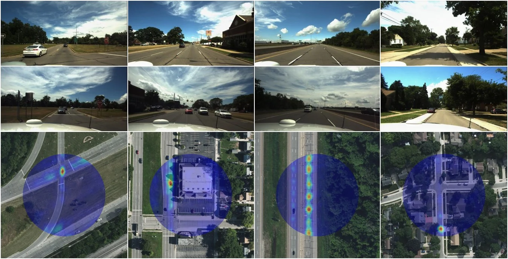
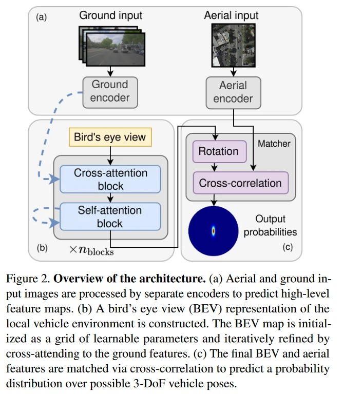
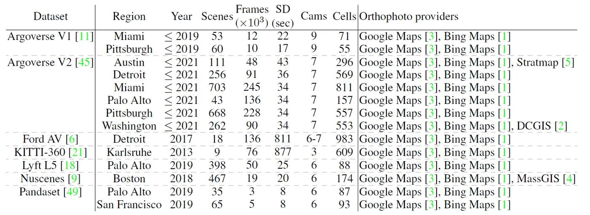
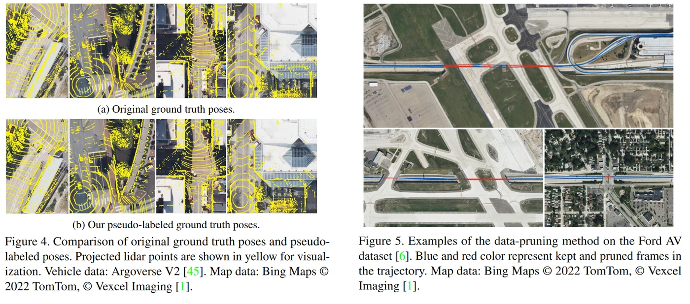
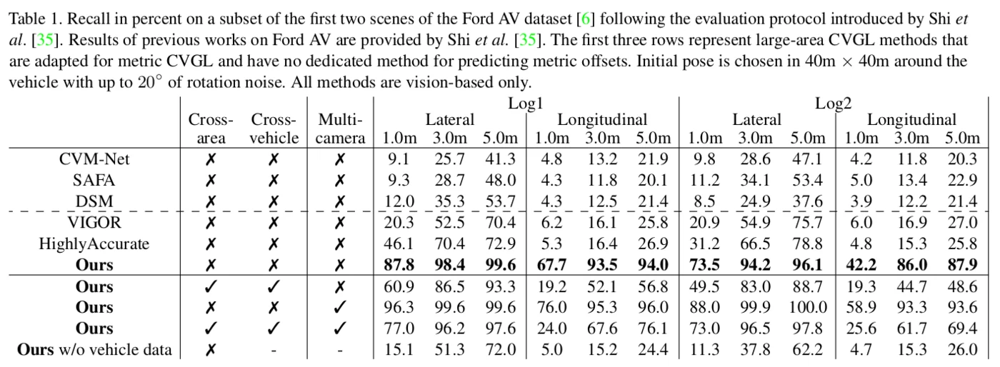
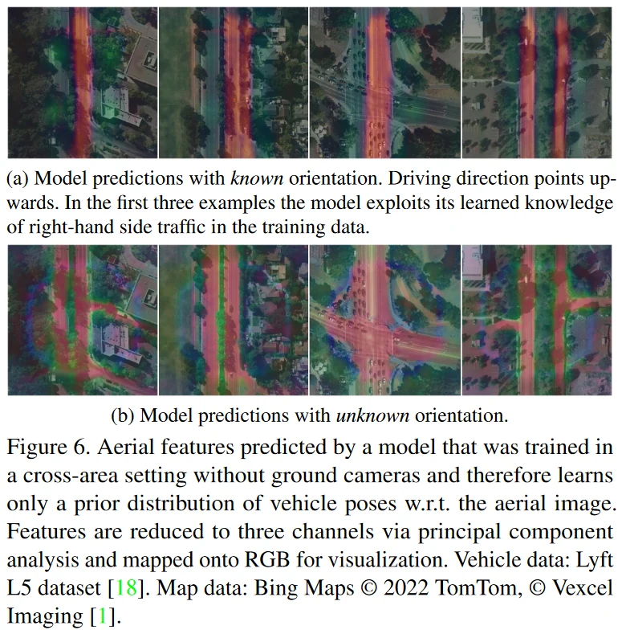

tl;dr Perform metric self-localization by matching a vehicle’s camera readings against aerial imagery.

Abstract
This paper proposes a novel method for vision-based metric cross-view geolocalization (CVGL) that matches the camera images captured from a ground-based vehicle with an aerial image to determine the vehicle’s geo-pose. Since aerial images are globally available at low cost, they represent a potential compromise between two established paradigms of autonomous driving, i.e. using expensive high-definition prior maps or relying entirely on the sensor data captured at runtime.
We present an end-to-end differentiable model that uses the ground and aerial images to predict a probability distribution over possible vehicle poses. We combine multiple vehicle datasets with aerial images from orthophoto providers on which we demonstrate the feasibility of our method. Since the ground truth poses are often inaccurate w.r.t. the aerial images, we implement a pseudo-label approach to produce more accurate ground truth poses and make them publicly available.
While previous works require training data from the target region to achieve reasonable localization accuracy (i.e. same-area evaluation), our approach overcomes this limitation and outperforms previous results even in the strictly more challenging cross-area case. We improve the previous state-of-the-art by a large margin even without ground or aerial data from the test region, which highlights the model’s potential for global-scale application. We further integrate the uncertainty-aware predictions in a tracking framework to determine the vehicle’s trajectory over time resulting in a mean position error on KITTI-360 of 0.78m.
Code
The original code used for our paper can be found in the supplementary material. We have since reworked some of the codebase to make it more accessible and easier to use. The code can be found in the following repositories:
- tiledwebmaps: Package for fetching aerial images from tiled web maps.
- cvgl_data: Common interface to all datasets used in the paper. Includes pseudo-labelled ground-truth.
Method

Dataset

We collect data from seven different datasets over nine regions to train and test our method. The large amount of data allows evaluating in a cross-area setting, i.e. with disjoint train and test regions. Ford AV and KITTI-360 contain scenes that are significantly longer than the other datasets and are therefore most suited for evaluating tracking frameworks.
In addition to aerial images from DCGIS, MassGIS and Stratmap (which are taken between 2017 and 2021) we collect aerial images from Google Maps and Bing Maps during 2022. These images might be several years old since the recording date is not provided.

Since the vehicle’s geo-locations do not always accurately match the corresponding aerial images, we compute new geo-registered ground truth poses for all datasets used in the work (Fig. 4) and filter out invalid samples via an automated data-pruning approach (Fig. 5).
Results
Our model outperforms previous approaches on the Ford AV dataset following the evaluation protocol of Shi et al. (CVPR2022), even under the strictly more challenging cross-area and cross-vehicle settings - which highlights the potential for global-scale application without fine-tuning on a new region or a new vehicle setup.

We additionally train our model without using information from the vehicle cameras, i.e. by setting all RGB values to zero. In this setting, the model learns a prior distribution of vehicle poses w.r.t. the aerial image since the BEV map is constant over different inputs. The model shows a performance similar to the previous state-of-the-art HighlyAccurate [35] for longitudinal recall indicating that their model might rely mainly on prior poses w.r.t. the aerial image rather than on cross-view matching. Fig. 6 shows a visualization of the features learned by the model in this setting.

We use a Kalman tracking framework to filter the uncertainty-aware predictions of the model and inertial measurements over time. In this setting, we outperform a recent lidar-visual metric CVGL method on KITTI-360 and achieve sub-meter accurate poses. We include two videos of the tracking framework applied to scenes in the Ford AV and KITTI-360 datasets below.
Click to play — the video is then loaded from YouTube.
Citation
@InProceedings{Fervers_2023_CVPR,
author = {Fervers, Florian and Bullinger, Sebastian and Bodensteiner, Christoph and Arens, Michael and Stiefelhagen, Rainer},
title = {Uncertainty-Aware Vision-Based Metric Cross-View Geolocalization},
booktitle = {Proceedings of the IEEE/CVF Conference on Computer Vision and Pattern Recognition (CVPR)},
month = {June},
year = {2023},
pages = {21621-21631}
}